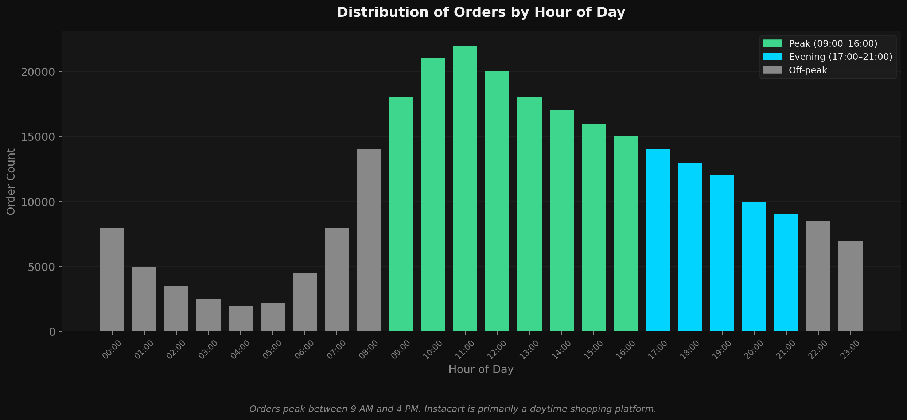
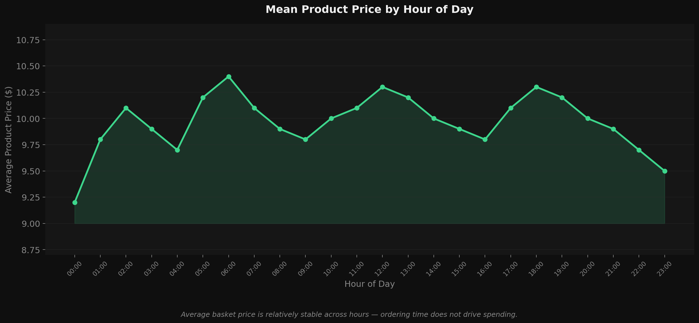
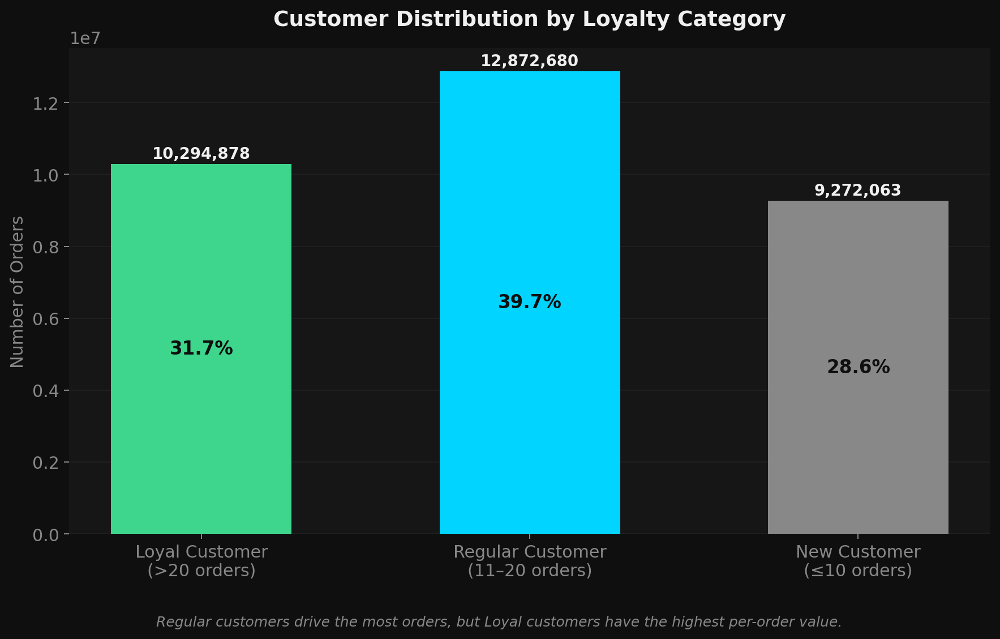
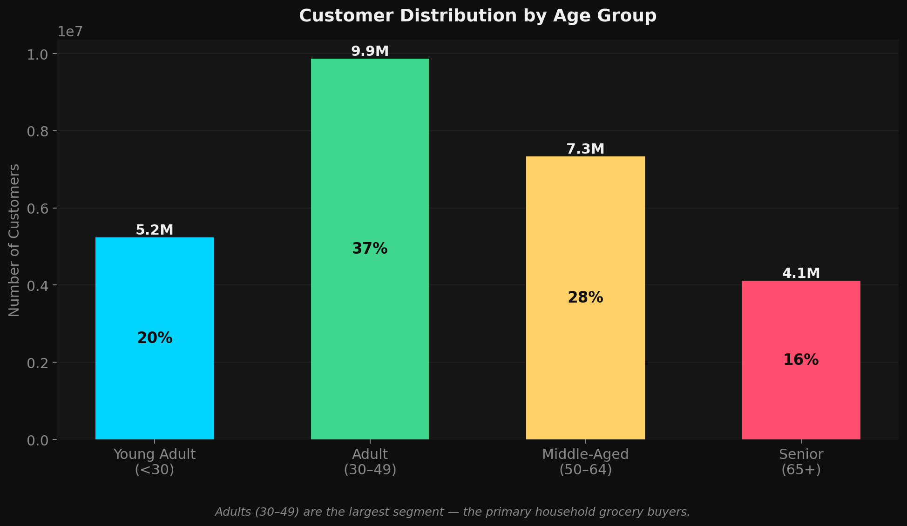
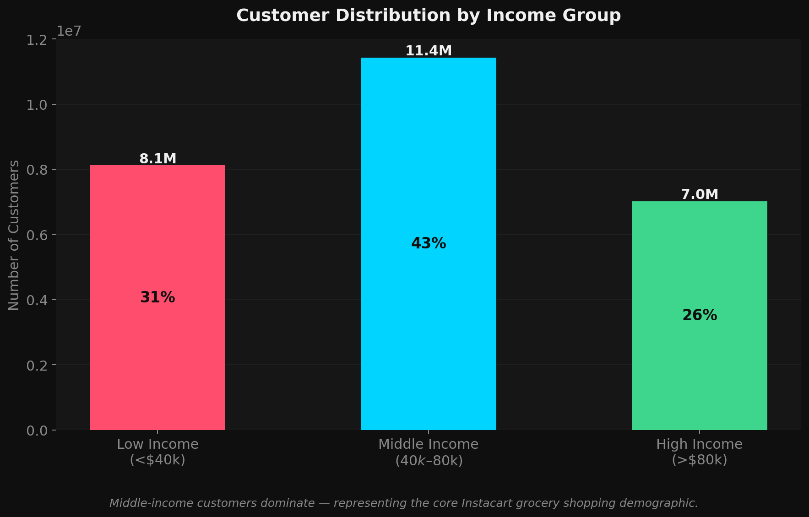
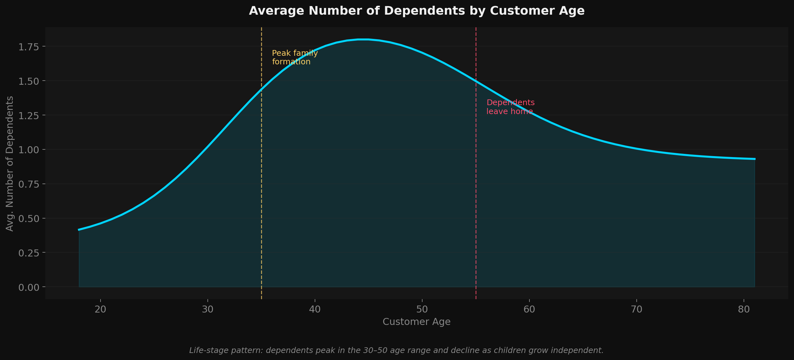
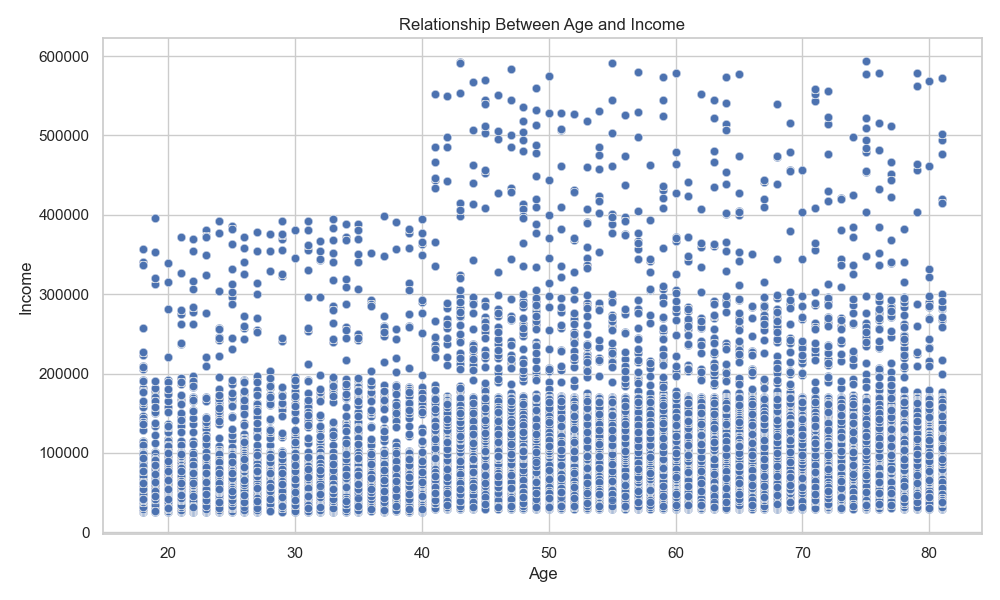
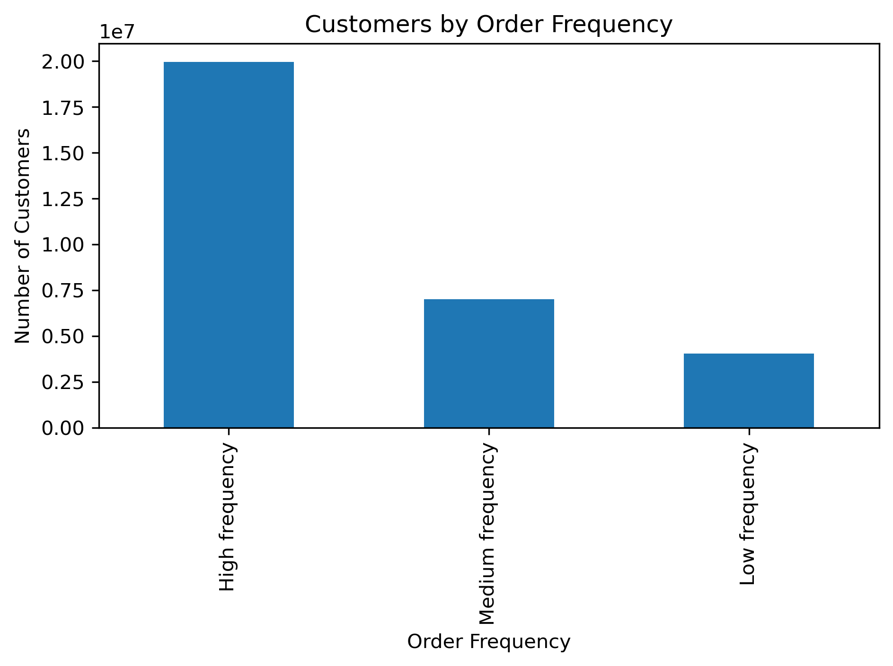
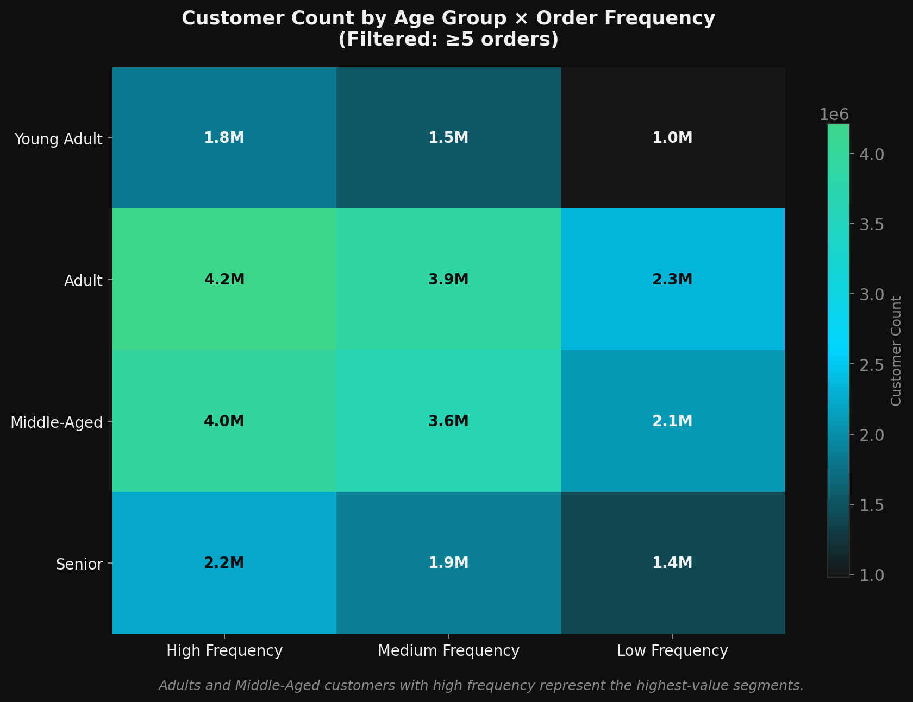

Datensatz: Instacart Market Basket — Bestellungen, Produkte, Kunden (~32 Mio. Bestellzeilen, ~206.000 Kunden, 49 Abteilungen)
Ergebnis: Kundensegmentierung über 5 Dimensionen: Loyalität, Ausgaben, Alter, Einkommen und Bestellhäufigkeit
Instacart benötigte tiefere Einblicke in das Kaufverhalten der Kunden, um Targeting und Marketing zu verbessern. Diese Analyse nutzte Bestelldaten, zusammengeführt mit Kundendemografien, um vier zentrale Geschäftsfragen zu beantworten.
| Schritt | Notebook | Aktion |
|---|---|---|
| 1. Import | 4.2 | orders.csv + products.csv importieren, profilen und vorschauen |
| 2. Wrangling | 4.3 | Spalten umbenennen, Teilmengen erstellen, bereinigte Daten exportieren |
| 3. Konsistenz | 4.4 | Gemischte Typen beheben, 260.000 fehlende Werte behandeln |
| 4. Zusammenführung | 4.5 | Bestellungen + Produkte in einem Dataframe zusammenführen |
| 5. Neue Variablen | 4.6 | price_label, busiest_day, busiest_period_of_day erstellen |
| 6. Gruppierung | 4.7 | Loyalitäts-, Ausgaben- und Bestellhäufigkeits-Flags |
| 7. Kunden | 4.8 | Kundendemografien (206K) einmergen |
| 8. Visualisierung | 4.8 | 8 Diagramme: Bestellungen, Loyalität, Preise, Demografien |
| 9. Profiling | 4.9 | PII-Entfernung, regionale Segmentierung, Kundenprofile |
| Problem | Spalte | Lösung |
|---|---|---|
| Preisausreißer (max = 99.999) | products.prices | Als Dateneingabefehler markiert — als "High" in price_label gekennzeichnet |
| 260.290 fehlende Werte | days_since_prior_order | Erwartet: Erstkunden haben keine vorherige Bestellung. Mit 0 gefüllt. |
| Gemischter Datentyp (object) | days_since_prior_order | Mit pd.to_numeric(errors="coerce") konvertiert |
| Unintuitive Spaltenbezeichnung | order_dow | In order_day_of_week umbenannt |
| PII in Kundendaten | first_name, last_name | Vor Profiling und Berichterstattung entfernt |
Wichtige Erkenntnis — Fehlende Werte
260.290 fehlende Werte in days_since_prior_order klingen alarmierend, sind aber erwartet — das sind Kunden, die ihre erste Bestellung aufgeben. Kontext bestimmt, ob fehlend = Problem.


Wichtige Erkenntnis — Spitzenzeiten
Bestellungen häufen sich um 10:00 Uhr. Promotionen zwischen 8–10 Uhr könnten Kunden zum Zeitpunkt der höchsten Kaufabsicht erreichen.
| Segment | Bedingung | Geschäftliche Bedeutung |
|---|---|---|
| Treuer Kunde | Mittl. Bestellnummer > 20 | Langfristige, hochengagierte Nutzer |
| Stammkunde | Mittl. Bestellnummer 11–20 | Etabliert, aber noch nicht gewohnheitsmäßig |
| Neukunde | Mittl. Bestellnummer ≤ 10 | Neue oder seltene Nutzer |

Wichtige Erkenntnis — Loyalität vs. Ausgaben
Treue Kunden sind nicht automatisch Vielausgeber — manche Langzeitnutzer kaufen habitually günstige Produkte. Die Kombination beider Flags schafft umsetzbarere Segmente.
| Variable | Bins | Labels |
|---|---|---|
| age_group | <30 / 30–49 / 50–64 / 65+ | Junge Erwachsene / Erwachsene / Mittleren Alters / Senior |
| income_group | <40k€ / 40k–80k€ / >80k€ | Niedriges / Mittleres / Hohes Einkommen |
| family_status | 0 / 1–2 / 3+ Abhängige | Keine / Kleine / Große Familie |
| order_frequency | 5–9 / 10–19 / 20+ Bestellungen | Niedrige / Mittlere / Hohe Frequenz |




Kunden mit weniger als 5 Bestellungen wurden zuerst ausgeschlossen (1,44 Mio. Zeilen entfernt). Jeder verbleibende Kunde erhielt ein kombiniertes Profil.


Erkenntnis 1 — Bestellungen häufen sich zwischen 9 und 16 Uhr.
Instacart ist eine Tagesplattform. Promotionen und Logistikstaffing sollten auf das 9–16-Uhr-Fenster konzentriert werden.
Erkenntnis 2 — Produktpreis ist über alle Stunden stabil.
Zeitbasierte Preisanreize ändern das Ausgabeverhalten nicht. Promotionen sollten Segmente, nicht Stunden, ansprechen.
Erkenntnis 3 — Stammkunden erzeugen das meiste Bestellvolumen.
Eine Loyalitätskonversionsstrategie — von Stamm- zu Treuekunden — bietet das höchste Umsatzpotenzial.
Erkenntnis 4 — Erwachsene (30–49) sind das dominante Segment.
Marketingkampagnen sollten auf Haushaltseinkäufe optimiert werden: Grundnahrungsmittel, Frischprodukte und Mahlzeitenplanung.
Erkenntnis 5 — Mitteleinkommenskunden sind die Kerndemografie.
Kernkatalogpreise sollten für Mitteleinkommenshaushalte zugänglich bleiben, während Premium-Platzierung das Hocheinkommenssegment gezielt anspricht.
Erkenntnis 6 — Hochfrequente Kunden sind die größte Einzelgruppe.
Bindungsstrategien (Abonnements, Treueprämien) haben eine größere Zielgruppe als Neukundenakquise — und daher höheren ROI.
Laden Sie die vollständige Fallstudie mit allen Diagrammen, Pipeline-Dokumentation und Segmentierungsanalyse herunter.
↓ Vollständige Fallstudie herunterladen (PDF)